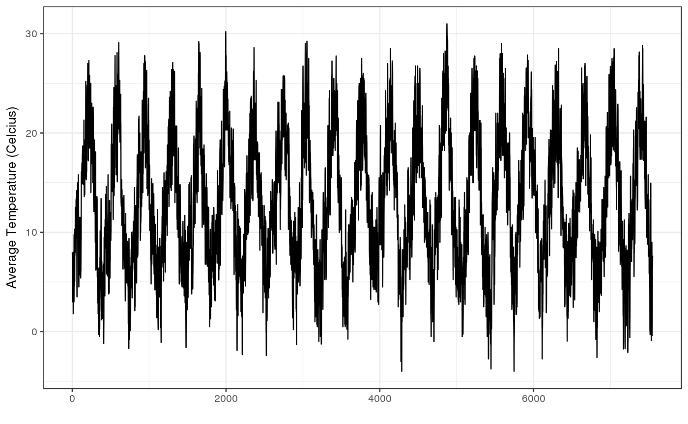

The data frame PAMTEMP has records of the temperature and precipitation for Pamplona, Spain from January 1, 1990 to December 31, 2010.
PAMTEMP
A data frame with 7547 observations on the following 7 variables:
tmax (maximum daily temperature in Celsius)
tmin (minimum daily temperature in Celsius)
precip (daily precipitation in mm)
day (day of the month)
month (month of the year)
year (year)
tmean (the average of tmax and tmin)
Ugarte, M. D., Militino, A. F., and Arnholt, A. T. 2015. Probability and Statistics with R, Second Edition. Chapman & Hall / CRC.
str(PAMTEMP)#> 'data.frame': 7547 obs. of 7 variables: #> $ tmax : num 10 11.8 10 8.3 5.6 5.8 7.8 10 10.2 7.6 ... #> $ tmin : num 6 3.2 5.4 4.1 0.4 0.8 3 4 3 -0.4 ... #> $ precip: num 0.0001 0.7 0.3 0.0001 0 3.6 1.6 0 0.0001 0 ... #> $ day : int 1 2 3 4 5 6 7 8 9 10 ... #> $ month : Factor w/ 12 levels "Apr","Aug","Dec",..: 5 5 5 5 5 5 5 5 5 5 ... #> $ year : int 1990 1990 1990 1990 1990 1990 1990 1990 1990 1990 ... #> $ tmean : num 8 7.5 7.7 6.2 3 3.3 5.4 7 6.6 3.6 ...levels(PAMTEMP$month)#> [1] "Apr" "Aug" "Dec" "Feb" "Jan" "Jul" "Jun" "Mar" "May" "Nov" "Oct" "Sep"PAMTEMP$month <- factor(PAMTEMP$month, levels = month.abb[1:12]) levels(PAMTEMP$month)#> [1] "Jan" "Feb" "Mar" "Apr" "May" "Jun" "Jul" "Aug" "Sep" "Oct" "Nov" "Dec"ggplot(data = PAMTEMP, aes(x = 1:dim(PAMTEMP)[1], y = tmean)) + geom_line() + theme_bw() + labs(x = "", y = "Average Temperature (Celcius)")